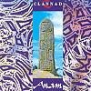

Celtic Lyrics Corner > Artists & Groups > Clannad > Anam
|  |
Anam
(1992) |
| Tracks : |
1.
Rí Na Cruinne
2. In A Lifetime 3. Anam 4. In Fortune's Hand 5. The Poison Glen 6. Wilderness 7. Harry's Game 8. Why Worry? 9. Úirchill An Chreagáin 10. Love And Affection 11. You're The One 12. Dobhar |